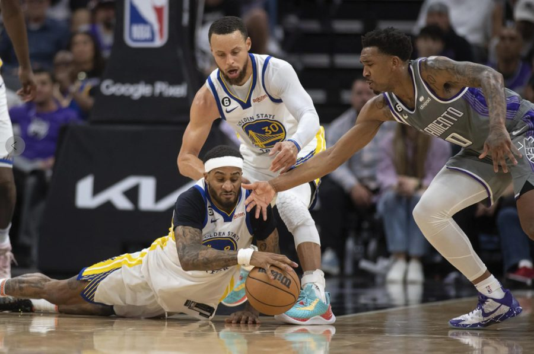
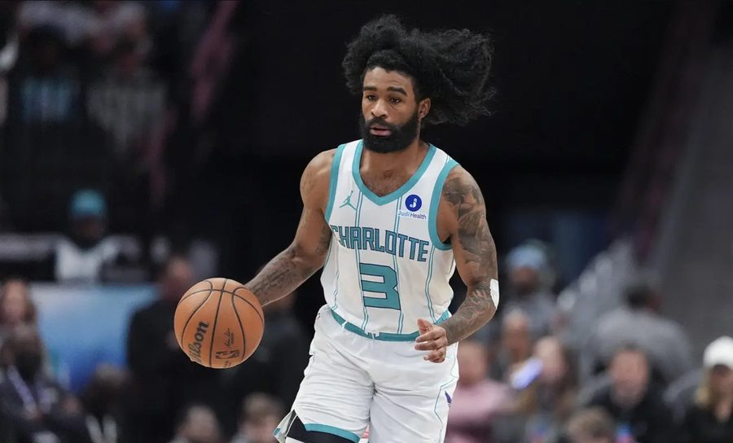
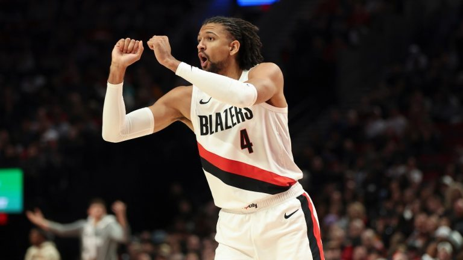
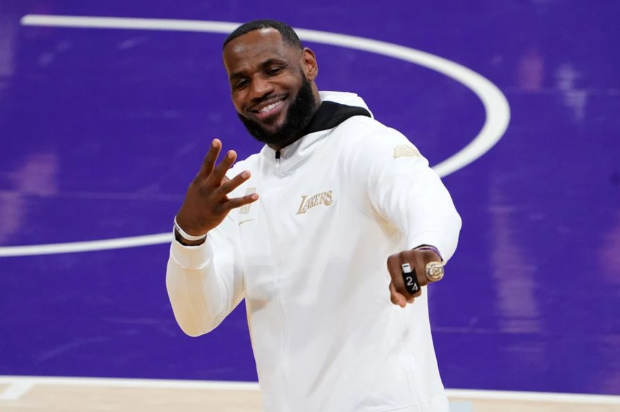

Denver Nuggets · 2026 Offseason
How the Denver Nuggets Can Improve This 2026 Offseason
Download Memo and SQLI. Executive Summary
Following a disappointing exit to the Minnesota Timberwolves, the Denver Nuggets enter the 2026 offseason as a luxury tax team with $191.6M in committed payroll against a $154.6M salary cap — $37M over the cap line. As Nikola Jokic's extension looms over the heads of the front office, they must not only capitalize on his prime, but also plan strategically for the future.
This analysis uses a custom-built SQLite relational database, populated with 2025-26 Basketball Reference advanced statistics and HoopsHype salary data, to answer one question: how should Denver allocate its limited remaining roster capital?
The core finding is that Denver's positional value is deeply uneven. The center position produces 8.9 average win shares — a metric driven almost entirely by Nikola Jokic — while the power forward and small forward groups average just 1.2 and 1.6 win shares respectively, both with negative Box Plus/Minus. The team cannot improve at center. It must improve the wings.
Given the cap constraints, Denver's available tools are the Non-Taxpayer MLE (~$12.8M), the Bi-Annual Exception (~$4.5M), and veteran minimum contracts (~$3.6M). Max contracts are not available. This memo recommends three external signings and a priority re-sign list for Denver's nine own free agents.
II. Cap Situation & Financial Constraints
Denver has zero cap space. At $191.6M in payroll, the Nuggets are $37M over the cap and firmly in luxury tax territory. Jokic ($55.2M), Murray ($46.4M), and Gordon ($22.8M) alone account for $124.5M — 65% of total payroll. There is no mechanism to clear cap space without a major trade.
| Cap Metric | Amount | Implication |
|---|---|---|
| 2025-26 Salary Cap | $154,647,000 | League threshold |
| Current Payroll | $191,600,929 | Over cap by $37M — no space available |
| Luxury Tax Threshold | ~$187,876,000 | Denver is a tax payer — penalties apply |
| Non-Tax MLE | ~$12,800,000 | Primary external signing tool |
| Bi-Annual Exception | ~$4,500,000 | Secondary tool — once every 2 years |
| Veteran Minimum | ~$3,634,153 | Depth signings — unlimited |
III. Positional Value Analysis
The following table is the direct output of a SQL GROUP BY query joining the players, player_stats, and contracts tables. It shows exactly where Denver's roster capital is producing value — and where it is not.
| Position | # Players | Avg Win Shares | Avg PER | Avg BPM | Assessment |
|---|---|---|---|---|---|
| PF | 8 | 1.20 | 15.65 | -0.75 | Weakest — priority upgrade |
| SF | 8 | 1.60 | 12.00 | -0.45 | 2nd weakest — depth needed |
| SG | 12 | 2.52 | 11.94 | -1.78 | Below avg BPM |
| PG | 6 | 3.13 | 12.80 | -1.67 | Murray elite; depth poor |
| C | 4 | 8.90 | 27.15 | +7.10 | Dominant — Jokic effect |
IV. Current Roster Value Ranking ($/Win Share)
Players ranked by cost-per-win-share. Lower numbers = greater value per dollar of salary.
| Player | Pos | Salary | Win Shares | PER | BPM | $/Win Share |
|---|---|---|---|---|---|---|
| Tim Hardaway Jr. | SG | $3,654,153 | 4.4 | 13.5 | -0.7 | $830,489 |
| Bruce Brown | SG | $3,080,921 | 2.9 | 10.8 | -2.4 | $1,062,387 |
| Christian Braun | SG | $4,921,797 | 3.0 | 12.6 | -1.2 | $1,640,599 |
| Peyton Watson | SF | $4,356,476 | 2.6 | 14.3 | -1.2 | $1,675,568 |
| Julian Strawther | SG | $2,674,148 | 1.3 | 12.5 | -2.3 | $2,057,037 |
| Jalen Pickett | SG | $2,221,677 | 1.0 | 10.3 | -2.3 | $2,221,677 |
| Jonas Valanciunas | C | $10,395,000 | 2.9 | 22.0 | 0.0 | $3,584,483 |
| Nikola Jokic | C | $55,224,526 | 14.9 | 32.3 | +14.2 | $3,706,344 |
| Jamal Murray | PG | $46,394,100 | 9.5 | 21.8 | +4.1 | $4,883,589 |
| Aaron Gordon | PF | $22,841,455 | 3.2 | 18.5 | +1.7 | $7,137,955 |
| Zeke Nnaji | PF | $8,177,778 | 0.9 | 10.3 | -3.5 | $9,086,420 |
Notable: Jokic at $3.7M/WS is among the most efficient supermax contracts in NBA history. Tim Hardaway Jr. ($830K/WS) is the best value player on the roster. Zeke Nnaji ($9.1M/WS) is the clearest overpay on the books.
V. External Free Agent Targets
Six candidates pre-screened for cap tool fit and positional need, then ranked by cost-per-win-share from the SQL analysis query.
| Player | Pos | G | Win Shares | PER | BPM | Est. Salary | $/WS | Cap Tool |
|---|---|---|---|---|---|---|---|---|
| Deandre Ayton | C | 72 | 6.2 | 18.2 | -0.9 | $4,500,000 | $725,806 | BAE |
| Gary Payton II | SG | 73 | 3.5 | 18.3 | +1.9 | $3,634,153 | $1,038,329 | Vet Min |
| Jusuf Nurkic | C | 41 | 1.5 | 16.4 | +1.1 | $3,634,153 | $2,422,769 | Vet Min |
| Matisse Thybulle | SG | 30 | 1.3 | 14.5 | +6.1 | $3,634,153 | $2,795,502 | Vet Min |
| Jordan McLaughlin | PG | 44 | 0.6 | 12.0 | +2.5 | $2,874,436 | $4,790,727 | Vet Min |
| Coby White | PG | 21 | 1.3 | 20.1 | +2.9 | $12,000,000 | $9,230,769 | MLE |
Recommendation 1 — Gary Payton II | Veteran Minimum

GPII is the highest-priority external signing. At $1.04M per win share on a veteran minimum, he is the second-best value target — and the only target with a positive BPM (1.9) at minimum cost. Denver's SG group produced -1.78 average BPM; adding an above-average two-way guard immediately addresses this. His 73 games in 2025-26 confirms durability. Jokic's offensive gravity means GPII needs to contribute zero offensively to justify his spot.
Recommendation 2 — Coby White | Non-Taxpayer MLE (~$12M)

White is the most important external signing despite ranking last on $/WS. Context matters: his 21 games (20.1 PER, 2.9 BPM) were injury-limited. His projected 82-game win share of 5.1 would bring his $/WS down to ~$2.4M — competitive with any minimum-level target. Denver's backup PG situation is genuinely dangerous: Murray has a documented injury history, and the team currently has no viable starter-level backup. White solves this.
Recommendation 3 — Matisse Thybulle | Veteran Minimum

Thybulle's 6.1 BPM is the highest of any target — meaning he makes Denver measurably better defensively when on the floor. His role would be narrow: lock down opposing wings in playoff situations. At minimum salary, this is low-risk insurance.
VI. Denver's Own Free Agents
Nine Nuggets players hit free agency this summer. Priority informed by $/WS analysis and cap tool constraints.
| Player | Pos | FA Type | Prev Salary | Est. New Deal | Priority | Reasoning |
|---|---|---|---|---|---|---|
| Peyton Watson | SF | RFA | $4,356,476 | ~$3-4M | HIGH | RFA control, age 23. Match any offer. |
| Tim Hardaway Jr. | SG | UFA | $3,634,153 | Vet Min | MED | Best $/WS on roster. Min only. |
| Bruce Brown Jr. | SG | UFA | $3,080,921 | Vet Min | MED | Championship pedigree. Min only. |
| Jalen Pickett | PG | OPT | $2,221,677 | ~$2.2M | LOW | -2.3 BPM. Let walk if MLE available. |
| Tyus Jones | PG | UFA | $814,552 | Min | LOW | Backup depth only if White unavailable. |
| David Roddy | PF | RFA | $3,246,472 | Two-Way | LOW | -0.7 BPM. Two-way tender only. |
| Spencer Jones | SF | RFA | $623,967 | Two-Way | LOW | Developmental. Two-way only. |
| Curtis Jones | G | RFA | $0 | Two-Way | LOW | Camp invite / two-way only. |
| KJ Simpson | PG | RFA | $0 | Two-Way | LOW | Developmental. Two-way only. |
VII. The LeBron James Argument

Of course, we would not be remiss to address the elephant that looms over many teams' offseason plans — the LeBron James proposal. Despite his age, LeBron's value as a secondary scorer and facilitator behind Jokic and Murray would help alleviate some of the pressure opposing teams put on them during clutch time. With an already competent supporting cast around them, it may be worth considering the NBA's all-time leading scorer if they manage to find an agreement that works around their financial timetable.
Practically speaking, Denver cannot sign LeBron outright — they have no cap space and no MLE large enough for a player of his market value ($50.7M AAV). Any pursuit would require a sign-and-trade framework.
VIII. Conclusion & Recommended Action Plan
Denver's 2026 offseason is not about transformation — it is about targeted reinforcement of a championship-caliber core. Three clear priorities emerge from the SQL analysis:
| 1 | Re-sign Peyton Watson (RFA) | Non-negotiable. Best value SF on roster; Denver holds matching rights. |
| 2 | Sign Gary Payton II — Vet Min | Highest defensive impact per dollar of any available free agent. 1.9 BPM. |
| 3 | Use MLE on Coby White (~$12M) | Addresses the most dangerous roster vulnerability: backup PG depth behind Murray. |
Combined, these three moves cost approximately $19.4M in new commitments — within the MLE plus two minimum contract framework. They directly address the two weakest positional groups (PF/SF at -0.75 and -0.45 BPM) and the backup PG hole that has historically been Denver's playoff Achilles heel.
Methodology: All rankings were produced by SQL queries joining the players, player_stats, and contracts tables in a custom-built SQLite database (nba_contracts.db). Data sourced from Basketball Reference advanced stats (2025-26 season) and HoopsHype/Spotrac salary data. Analysis conducted as part of a portfolio project at the University of Southern California Marshall School of Business.
Denver Nuggets 2026 Free Agency Strategy Memo · Data: Basketball Reference, HoopsHype, Spotrac